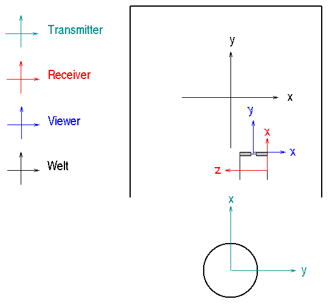

[ Installation & Configuration ] [ COVER Configuration ]
|
|
[ Installation & Configuration ] [ COVER Configuration ] |
COVER Configuration |
| covise.config |
COVER is configured via the COVISE configuration file covise.config.
The configuration file contains the sections:
CoverConfig |
| Examples |
Here you find some examples, which can be a template
for your own configuraton:
RUS CUBE with Motionstar and 6DOF mouse |
| COVERConfig |
The section COVERConfig can contain the following keywords:
ANTIALIAS
ANTIALIAS OFF
ARENA_SIZE <size>sets the size of the shared arena Performer uses. The default size is 256 MB. The size is defined in byte. If you want to increase the shared arena size please read the man pages of pfSharedArenaSize before. Example:increase the shared arena size to 1000 MB: ARENA_SIZE 1000000000 AUTO_WIREFRAME <flag>enables or disables auto wireframe mode. auto wireframe means that all scene objects are drawn in wireframe mode as soon as the user selects the menu. Possible values are ON and OFF. If you omit the line it is OFF.BUTTON_SYSTEM <system>specifies the use of an extra button devices which doesn't come with the tracking system. For example the Motionstar system from Ascension comes with a 3D mouse but DVISION offers an own 3D device where the scension sensor is integrated. For using the ascension mouse you do not have to specify a button system but for using the DVISION mouse you have to specify it in CoverConfig. The device is further configured in the section ButtonConfig.Supported systems are COORD_AXIS <flag>ON/OFF enables or disables drawing of an axis system in the renderer window at starting time. If the line is omitted the coordinate axis is displayed at starting time.FPS <flag>ON/OFF enables or disables printing the frame rate (FPS = frames per second) into the terminal window. If the line is omited printing the frame rate is disabled.Example:
FPS OFF
WELLCOME_MESSAGE <message>
If a wellcome message is specified this message is displayed for some seconds when COVER is started.
If a footer message is specified, this message is always displayed at the bottom of the renderer window.
Please note that the text is drawn only in the stereo channel of the right eye. |
| WindowConfig |
WindowConfig:
{
WinNo WinName SoftPipeNo Origin[pixel] Size [pixel]
0 FRONT 1 0 109 1024 915
1 RIGHT 1 1024 109 1024 915
2 LEFT 0 992 109 1024 915
3 BOTTOM 0 0 32 992 992
}
For each window you have fill in one line. The window number has to start with 0.
The window name can be any string.
The variable SoftPipeNo describes the software pipe, that is not identical to the hardware grafics pipe. The SoftPipeNo starts with 0 and has to be numbered consecutively. For example if you have 3 grafics pipes in your machine and you use 2 of them for COVER (pipe 0 and pipe 2) then the software pipes have to be numbered 0 and 1. With Origin and Size you set the origin (left bottom edge) and the size of the window on the XDisplay (managed area).
Passive Stereo SystemsFor passive stereo systems, which typically consist of two projectors creating one congruently overlapping picture by projecting the left and right image respecively, the window (and screen) configuration looks somewhat different. For a single projection wall with two projectors the window config would look like:
WindowConfig:
{
WinNo WinName SoftPipeNo Origin[pixel] Size [pixel]
0 FRONT 0 0 109 1024 915
1 FRONT 0 1024 109 1024 915
}
Here the same name has to be used to state that the two windows form a combined
passive stereo projection. Additionaly, in the COVERConfig section of the configuration
file the number of windows has to be set to two:
COVERConfig:
{
...
# Set number of windows 2*n
NUM_WINDOWS 2
...
}
Finally the screen configuration section should look like:
ScreenConfig:
{
# ScreenNo ScreenName ScreenSize[mm] ScreenCenter[mm] ScreenOrient hpr [degrees]
0 FRONT 2800 2500 0 0 0 0.0 0.0 0.0
1 FRONT 2800 2500 0 0 0 0.0 0.0 0.0
}
Again the same name (here FRONT) should be used double for passive stereo mode.
Note that in case of a n-wall passive stereo system, the multiple double names
should occur sequentially (1,1,2,2) and should not be mixed (1,2,1,2).
|
| PipeConfig |
PipeConfig: vision
{
# SoftPipe Screen Server:Screen
0 0 :0.0
1 0 :2.0
}
In a multipipe but single keyboard system, the screen is identical to
the hardware pipe number. For example if you have three pipes and you use 0
and 2 for COVER, then the screens are 0 and 2 and the Server:Screen
values are :0.0 and :0.1.
In a multipipe but triple keyboard system the ServerScreen values are :0.0 and :2.0. The screen is always 0. We know that one variable would be enough ;-) |
| ScreenConfig |
ScreenConfig: vista
{
# ScreenNo ScreenName ScreenSize[mm] ScreenCenter[mm] ScreenOrient hpr [degrees]
0 FRONT 2800 2500 0 1400 0 0.0 0.0 0.0
1 RIGHT 2800 2500 0 0 1250 -90.0 0.0 0.0
2 LEFT 2800 2500 -1400 0 0 90.0 0.0 0.0
3 BOTTOM 2800 2800 0 0 -1250 0.0 -90.0 0.0
ScreenConfig describes the geometry and orientation of the walls. Center
describes the center of the wall in relation to the origin of a default
projection plane. ScreenOrientation is the orientation offset in relation
to the default projection plane. The default projection plane in IRIS
Performer is the xz plane through the origin.
The Performer coordinate system is: X = RIGHT, Z = UP, Y = into the screen. |
| PolhemusConfig |
PolhemusConfig
{
SERIAL_PORT /dev/ttyd5 19200
HEMISPHERE 1 0 0
HAND POLHEMUS_STYLUS 1
HEAD POLHEMUS_SENSOR 2
LINEAR_MAGNETIC_FIELD_CORRECTION 0.0 0.0 -0.35
# x y z
TRANSMITTER_OFFSET_POS 0 -185 -25
# h p r
TRANSMITTER_OFFSET_EULER 90 180 0
# x y z
SENSOR_OFFSET_POS 10 0 10
# H P R
SENSOR_OFFSET_EULER -90 0 90
# x y z
STYLUS_OFFSET_POS 0 0 0
# H P R
STYLUS_OFFSET_EULER -90 0 90
}
The parameters behind the keyword SERIAL_PORT are the port name and the
baudrate. The baudrate is set with the switches at the rear side of the SEU.
The switches have the following meaning:
1 Baud Rate Select 2 Baud Rate Select 3 Baud Rate Select 4 Hardware Handshake select 5 Character width -- UP=8 Bits 6 Parity Select 7 Parity Select 8 IO Select -- UP for RS-232
The Baud Rate switches have the following meaning: 1200 000 2400 100 4800 010 9600 110 19200 001 38400 101 57600 011 115200 111 The parameters behind HEMISPHERE describe a vector pointing to the zenit of the hemisphere. The parameters for HAND and HEAD are the name of the device and it's station number. Note that Polhemus station numbers start with 1. The stylus button only works at station 1. The offset between the world coordinate system, the transmitter coordinate system and the sensor's coordinate system are also described in this section.  The TRANSMITTER_OFFSET_POSITION is the position of the transmitter in relation to the origin of the world coordinate system. You have to imagine how you have to tranlate the world coordinate system origin in the world coordinate system to fit to the transmitter origin. In the above figure you have to translate it in -x direction (and -z direction). The TRANSMITTER_OFFSET_EULER is the orientation of the transmitter in relation to the world coordinate system. Imagine how you have to rotate the world coordinate system in the world coordinate system to fit to the transmitter system. The Rotation order is R * P * H. This means first rotate about y (Roll) then about x (Pitch) and then about z (Heading). In the config file you have to specify the rotation in the order HPR where H=rot(z), P = rot(x), R=rot(z). The sensor offsets are used to indicate the mounting position of the sensor at the glasses in relation to the viewer system. To determine the SENSOR_OFFSET_POSITION imagine how you have to translate the receiver system (red) in the receiver system to fit to the viewer system (blue). In the above figure you have to translate it into +x and + z direction. To determine the SENSOR_OFFSET_EULER, imagine how to rotate the receiver system in the receiver system to fit to the viewer system order RPH. In the above figure you have to rotate it 90 degree about y (y is into the screen) and -90 degree about z. |
| January 2000 | Copyright © University of Stuttgart 2000 |